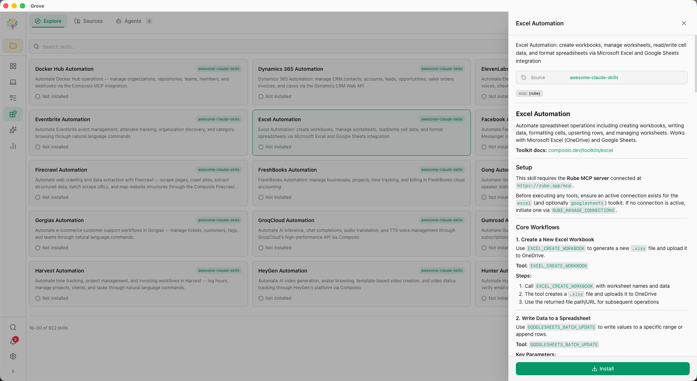
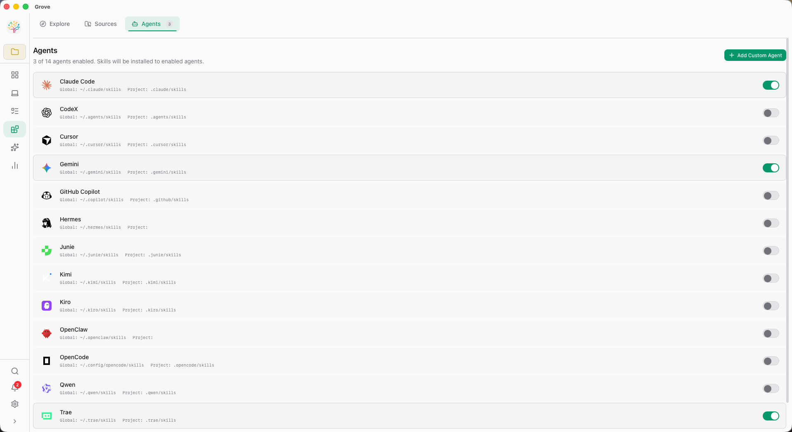
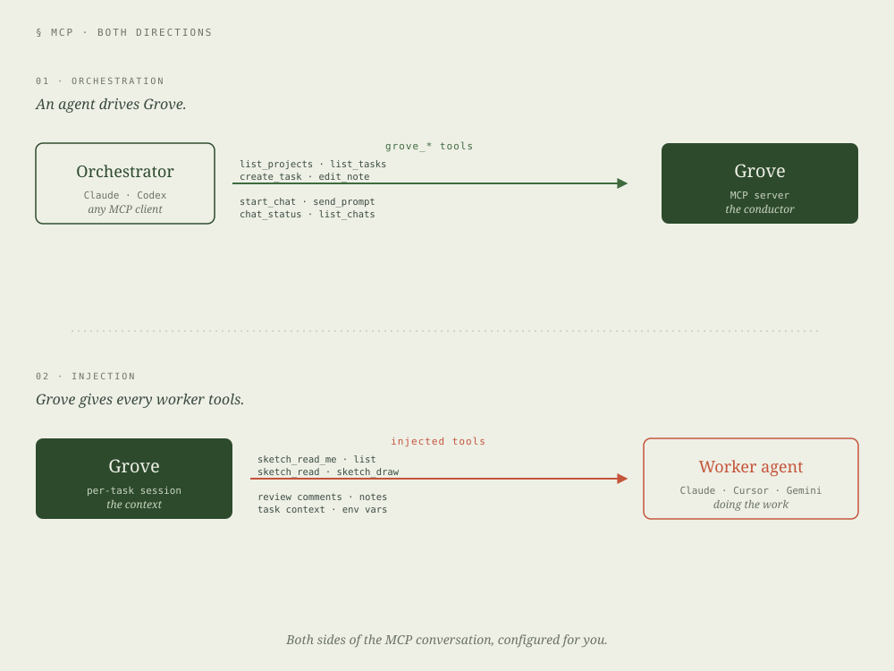
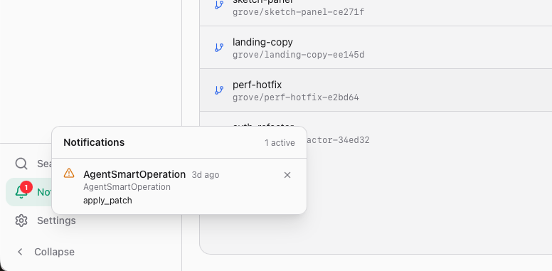

Grove ships batteries included — but nothing is hard-wired. Install a skill once, every installed agent gets smarter. Expose Grove via MCP so an orchestrator agent can drive your tasks. Plug in any custom agent with a launch command or a URL.

Grove's Skills page is a full marketplace — Explore to find new skills, Sources to manage where they come from, Agents to see which agents have which skills installed. Per-agent install state and actions. Per-scope install (project or global).
SKILL.md frontmatter
Grove is a first-class MCP server — grove mcp exposes
its task management, notes, reviews, and sketches to any agent that
speaks the protocol. At the same time, Grove injects itself into
every ACP session so worker agents can read notes and reply to reviews
without extra config.

Grove filters MCP tools by context. An agent running outside a task sees management tools. An agent running inside a task sees execution tools. Same server, different capabilities, zero chance of cross-wiring.
grove_add_project_by_path, grove_list_projectsgrove_create_task, grove_list_tasksgrove_start_chat, grove_chat_status, grove_send_prompt, grove_list_chatsgrove_edit_notegrove_status, grove_read_notes, grove_edit_notegrove_read_review, grove_reply_review, grove_add_commentgrove_complete_taskgrove_sketch_read_me, grove_sketch_list, grove_sketch_read, grove_sketch_draw{
"mcpServers": {
"grove": {
"command": "grove",
"args": ["mcp"]
}
}
}
If it speaks ACP, Grove can launch it — a local binary, a remote URL, or any of the 10 built-in agents Grove already knows about. Add one in Settings → Custom Agents. It shows up in the picker immediately.
Any binary that speaks ACP over stdio. Point Grove at a path and arguments — it launches on demand.
Any HTTP endpoint. Useful for hosted agents, or for running an agent on a different machine on your LAN.
Every chat remembers the agent, model, and mode you last picked. Availability detection hides offline agents from the picker.
Agents run in the background. You shouldn't have to babysit them.
grove hooks fires native system notifications so you
know when an agent finishes, needs attention, or hits an error.
grove hooks noticeTask completed successfully. A gentle chime, a clean notification.
grove hooks warnThe agent is blocked on a permission, a review, or user input.
grove hooks criticalSomething broke. You probably want to look at this now.

macOS uses UNUserNotificationCenter with a custom Grove icon.
Windows fires native toasts. Press h inside Grove to tune
sound and notification settings.
Extensibility isn't a plugin system tacked on. It's the architecture.